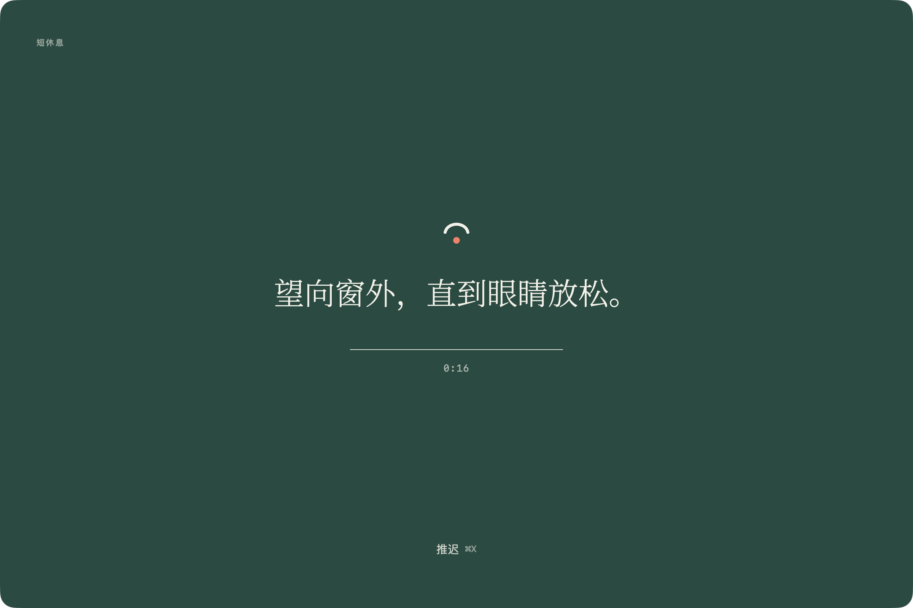
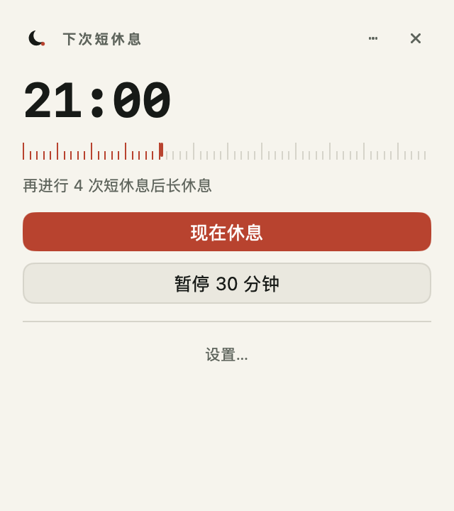
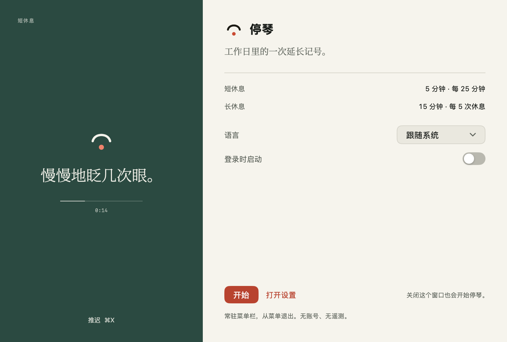
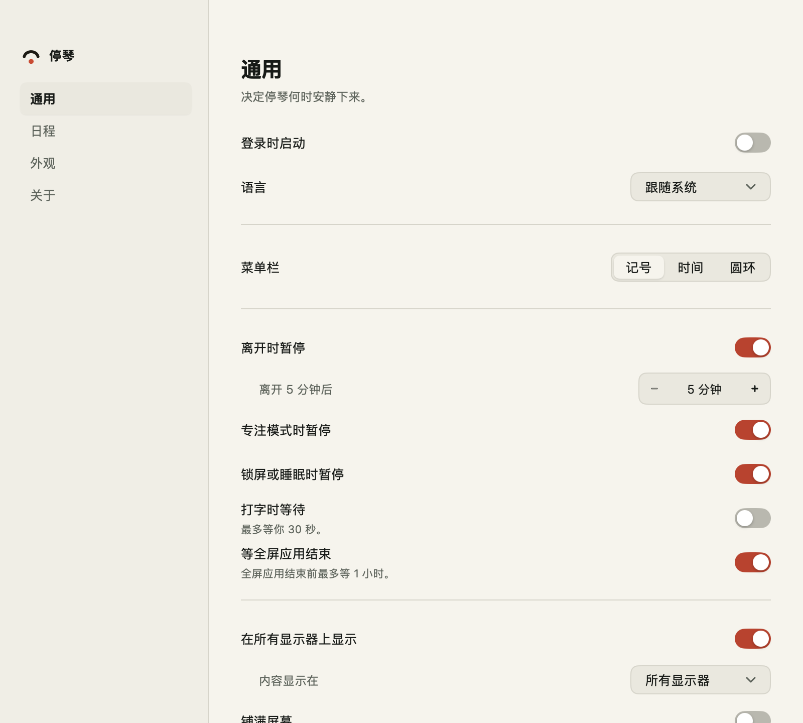

01
一片场，不是对话框
每块屏幕一个窗口，占 85%：延长记号、一句建议、一条随休息推进的细线，和一个出口。
菜单栏与系统托盘里的休息提醒
短休息与长休息按自己的节奏到来，占据屏幕几分钟，然后离开。一个进程，一个原生菜单栏图标，没有 webview。

Fermata 是乐谱上让一个音延续得比记谱更长的记号：乐队等着，然后继续。停琴，来自南朝诗人谢朓的一句诗。两个名字说的是同一个动作，记号也带着它：弧线是延长记号，下面的一点是按在弦上的指。
「停琴伫凉月，灭烛听归鸿」停下手里的琴，站在凉月里，吹灭蜡烛，听归来的雁。谢朓 《移病还园示亲属诗》
望向窗外，直到眼睛放松。
默认番茄钟：每 25 分钟一次 5 分钟短休息，每四次短休息之后一次 15 分钟长休息。两种都可以调整，至少保留一种。
每块屏幕一个窗口，占 85%：延长记号、一句建议、一条随休息推进的细线，和一个出口。
不能推迟、不能跳过、不能关掉窗口；休息结束前应用拒绝退出。锁屏也会结束这次休息。
30 分钟、1 小时、到明早，或者一直暂停。也会自己暂停：离开、专注模式、锁屏，以及你排除的应用。
全屏应用最多让它等一小时；打字最多等 30 秒。开始后仍是完整的时长。
通用、日程、外观、关于。中文或 English、登录时启动、菜单栏样式、场的颜色、声音、排除的应用。
一个 Go 进程、一个原生菜单栏图标，没有 webview。空闲 CPU 接近零，也不常驻内存。




macOS 用 Homebrew 或磁盘映像；Windows 用安装器或免安装 zip；Linux 用 .deb、.rpm、带 install.sh 的 tarball 或 PKGBUILD。macOS 版是 ad-hoc 签名、未公证，Windows 版尚未签名，首次运行 SmartScreen 会问一次。
brew tap gythialy/tap
brew install --cask fermata
Windows：fermata-setup-…-amd64.exe，或免安装 zip；首次运行选「更多信息 → 仍要运行」。Linux：.deb、.rpm、带 install.sh 的 tarball，或 PKGBUILD；需要 GTK 3 与 AppIndicator。
更新：brew upgrade --cask fermata。